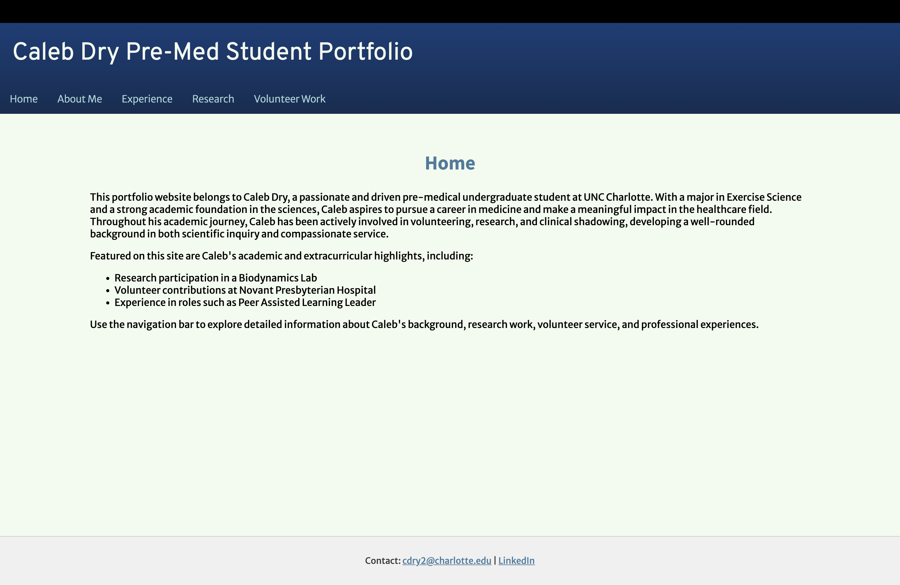

Peer Evaluation 2 - Gopinathan, Mila
Reviewing Gopinathan, Mila - Client Project
Screenshot of Pre-Med Student Portfolio click image or THIS LINK to go to site.
Evaluation Checklist Notes
- There are no uppercase letters or spaces in file or folder names.
- The page has sufficient contrast and font sizing so it is easy to read.
- The page uses site colors and fonts from the standard CSS file.
- Each page seems to includes a header, main, and footer, and nav
- The header contains what it is.
- The main section looks like there is an h2 element.
- No slogan but its purpose of the website does not really need one.
- The footer has links.
CRAP Principles:
- Contrast: No contrast issues and everything is easy to read.
- Repetition: There is consistent styling and design on all pages.
- Alignment: The alignment is there through all the pages.
- Proximity: The sections are organized and grouped correctly.
Suggestions:
- include color on the footer that can align with the header for a more modern look
- include validation links for all the pages
- possibly change the layout of the header so the title and nav links have a horizontal look.